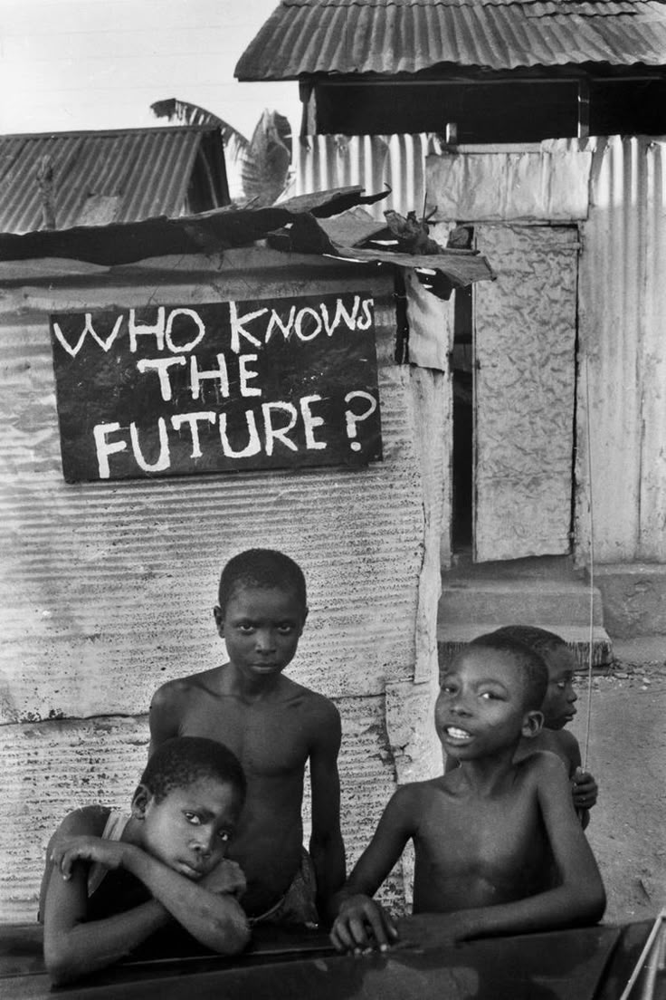

Diante da pergunta estampada na placa — "Who knows the future?" — o que se vê são corpos pequenos carregando o peso de uma incerteza gigante.
Essas crianças, em silêncio, respondem mais do que qualquer adulto poderia.
Na periferia, o futuro não é uma promessa, é um desafio diário.
A imagem tensiona a ideia de esperança, trazendo à tona a ausência de garantias e o excesso de sonhos ainda por realizar.
O olhar curioso, o gesto contido, a rua como cenário: tudo nessa composição nos força a encarar a responsabilidade coletiva de mudar a pergunta — e criar novas respostas.